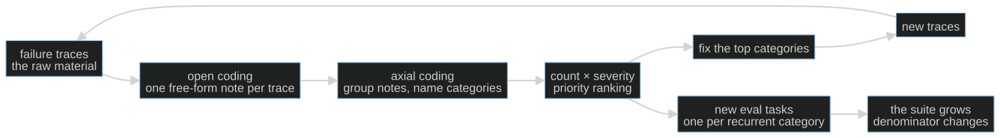

S10-error-analysis — From a pile of failures to a permanent eval task
Carried in: cafe/report.py — S09's citation-checked debrief, and the recorded shifts it can describe. You can now tell one shift's story honestly; tonight you find out which failures keep happening.
Today you ship: cafe/taxonomy.py — the pipeline that turns a pile of real failures into a ranked taxonomy and a new eval task.
What this teaches: error analysis as a method — open coding a pile of real traces into free-form notes, axial coding those notes into categories narrow enough to be wrong, ranking by frequency × severity, and promoting the top category into a permanent eval task that fails on the engine that produced the pile and passes on the fix.
Time: 20–40 min active reading, 45–75 min notebook work, 5–10 min self-check. These are planning estimates, not measured learner timings. Prerequisites: S02 (checker tiers and the fixture invariant); S08 (traces you can pull); S09 (the event log that already flags what the harness noticed).
Hands-on: notebooks/s10_error_analysis_toy.py — runs against your model.
Video: Gemini Notebook overview — generated with Google Gemini Notebook (formerly NotebookLM); recorded against an earlier cut of this path, so it still uses the previous toy domain. Preview or review, never a substitute for the notebook.
The hook
Three shifts, three transcripts, and a suite that says everything is fine. Then you read the traces. One shift never checked an allergy the customer declared by name. Another fired a ticket before the customer confirmed it. A third ran out of turns with the customer still waiting for an answer.
The aggregate said 6/9. It could not say which six, or why. A number tells you there is a fire; it does not tell you what is burning.
The promise
By the end of this session you will have pulled real failures out of several live shifts, labeled them by close reading, ranked them by frequency × severity, and turned the top category into a permanent eval task — one you can watch fail on the engine that produced the pile and pass on the fix. You will finish with a ranked taxonomy with trace references, one new regression guard, and a number that says how often reading and keyword-filing agree.
The theory in depth
The number says something is wrong; reading says what
Your eval suite returns a pass rate. Two different systems can score identically — one failing on safety, the other on formatting — and the rate cannot tell them apart. Treat it as a smoke detector: it tells you there is a problem and roughly where, never what is burning. Tuning whatever moves the number is how teams ship a green suite over a red shift.
Error analysis is the discipline that converts the number into work: read the failures, name them, group them, rank them, fix the top, and grow the suite from what you found.

The loop does not end. After a fix ships, read the new failures: categories die, new ones appear, the taxonomy is a living document. What you may not do is automate the reading away.
Open coding: let the data name the categories
Open coding is the first pass: read one trace and write, in your own words, what went wrong. No fixed list of allowed answers. The method is borrowed from grounded theory (overview) and applied to agents by Hamel Husain's field guide (hamel.dev). Two habits make it work:
- Label the most upstream error. Failures cascade — a misread request in turn 1 produces a wrong tool call in turn 3 and a confident non-answer in turn 4. If you label the symptom you will patch the last line and leave the cause.
- Write the category list after reading, never before. A list written first encodes
what you already believe, and the failure you have not imagined is exactly what the
exercise exists to find. The diagnostic: if your
otherbucket is the biggest one, your taxonomy is wrong.
Axial coding: a taxonomy that earns its rows
Axial coding is the grouping pass: lay the notes side by side, cluster the ones with the same underlying cause, name each cluster. Every row has to earn its place — cite at least one real trace id, stay narrow enough to be wrong, and name its fix. "The model was wrong" fits every trace and suggests nothing; it is a label, not an analysis.
Then rank by frequency × severity, not frequency alone. A safety failure at n=2 can
outrank an annoyance at n=5 — but you need both columns to argue it. cafe/taxonomy.py
weights severity (high 3, medium 2, low 1) and sorts on weight, then count, then
name, and every row keeps the trace ids that put it there.
The auto-filer orders the queue; it never closes it
The tempting shortcut is to file the pile with keyword rules instead of reading it.
classify_naive does exactly that: two keywords, and everything else falls into other.
This is not useless — it is triage. It is fatal only as a substitute, because the failure
it has no keyword for is invisible to it, and that is usually the bucket where being wrong
hurts most. The notebook makes you score the shortcut against your own reading, so you can
see which records it misfiled.
Promotion: the top category earns a permanent eval task
A prioritized taxonomy is a to-do list in two halves: fixes for the top categories, and new eval tasks, one per recurrent category. A promoted task carries the script that reproduced the failure, the tool calls its trace must show, and a deterministic check. Two invariants make it worth a slot:
- it fails on the engine that produced the pile — the failure is provably present, not imagined;
- it passes on the fix, and its check still passes the S02 fixture invariant (bare fixture fails, reference passes).
That delta is what makes it a regression guard instead of a wish. promote builds the
task; naive_engine and guarded_engine stand in for the two engines so the
discrimination is provable without another model call.
Build (in the notebook, predict first)
Open notebooks/s10_error_analysis_toy.py.
Configure your endpoint first:
export CAFE_BASE_URL=http://127.0.0.1:11434/v1
export CAFE_API_KEY=ollama
export CAFE_MODEL=qwen2.5:14b-instruct
uv run python -m cafe.doctor
uv run marimo edit notebooks/s10_error_analysis_toy.py
- Drive the pile. Three live shifts run through
run_shiftunder a deliberately tight turn cap (max_turns=3). Each script declares what the customer asked for and which tool the shift must call. The cap is a harness choice, not a model-quality score: a shift that runs out of turns before the customer is answered is a real failure. - Harvest only what the trace shows.
harvestreads each recorded run against its script and returns one record per failure — a missing expected tool, a ticket fired with no priorpropose_order, an 86'd item sent to the kitchen, a turn cap — each with an id, a severity, and a verbatim quote from the conversation. If the trace does not show it, it is not in the pile. A well-behaved model can produce an empty pile; the notebook then adds one deliberately capped shift and says so rather than hiding it. - Predict first: the categories. Before you read closely, write down the two or three
category names you expect this pile to contain. Then fill
attempt_open_code— one category per record — and flip the reveal switch only after your attempt. The reference solution names four; yours may differ, and that is fine as long as each name is narrow enough to be wrong. - Rank and file.
rankturns your labels into a frequency × severity table with trace references;agreedscores your reading againstclassify_naive. Predict the agreement count before you run it, then look at which records the auto-filer misfiled. - Predict the promotion. The top category is about to become an eval task. Will it
fail on
naive_engine, pass onguarded_engine, or fail on both? Write your answer, then runpromoteandcheck_taskand watch the delta.
The notebook's closing cells are protocol invariants, not decoration: every harvested record gets exactly one non-empty label, and the promoted task fails the naive engine and passes the guarded one.
Checkpoint — the number you bank
Record three things from this run, with your model name beside them:
- the agreement count between your hand labels and the auto-filer, over the pile size — and, more usefully, which records the shortcut missed;
- the ranked top category with its
nandfreq × sev; - confirmation that the promoted task fails the naive engine and passes the guarded one.
The counts are facts about this pile on your endpoint, not a model-quality score. The promoted task discriminates deterministically whatever the model did.
State of the art (as of August 2026)
| Development | Status | Take |
|---|---|---|
| Hamel Husain — A Field Guide to Rapidly Improving AI Products | already in this path | The assigned method: notes first, categories second, evals third — the exact loop this session rehearses. |
| Grounded theory (open and axial coding) | already in this path | Applied agent work rediscovered a sixty-year-old social-science method. Constant comparison is your axial pass. |
| Cemri et al. — Why Do Multi-Agent LLM Systems Fail? (MAST) | recognize | A published top-down taxonomy built from 150 annotated traces. Compare its category grain size with yours. |
| Anthropic — Demystifying evals for AI agents | adopt | Where your new task lands: capability evals graduate into the regression floor. The denominator change is the mechanism working. |
| LangSmith observability docs | recognize | Clustering and auto-grouping traces order the reading queue. Ordering, not replacement. |
| Langfuse academy — error analysis | recognize | A vendor teaching the manual version still starts with "read the traces." The reading is the product. |
Annotated readings
- Hamel Husain, A Field Guide to Rapidly Improving AI Products. Extract the open/axial two-phase loop and the most-upstream-error heuristic — and the claim that skipping error analysis is the most common mistake in applied AI.
- Grounded theory, overview. Extract constant comparison: each new trace is coded against the categories so far, and the categories get revised. That is why your taxonomy is a draft until the last trace is read.
- Cemri et al., Why Do Multi-Agent LLM Systems Fail?. Extract the category boundaries — where do they split what you would merge? — as calibration for your own taxonomy's grain size.
- Anthropic, Demystifying evals for AI agents. Extract the capability/regression split: today's failure-grown task is tomorrow's merge gate.
Misconceptions and failure modes
- "Fix first, classify later." You read one ugly trace and patch it immediately. That is whack-a-mole: you fixed the loudest bug, and the frequency data that would have ranked it never got collected.
- "The a priori taxonomy." Categories written before reading encode your assumptions; novel failures get forced into wrong buckets or dumped in
other. A bigotherbucket means the taxonomy is measuring your blind spots. - "Category collapse." "The model was wrong" fits every trace and suggests no fix. A category too broad to disagree with is a label, not an analysis.
- "Rows without trace references." If you cannot point a row at a real trace id, it is unverifiable — and the references are how a skeptic audits your counts without redoing the reading.
- "The auto-filer is the answer." Keyword rules are triage for the reading queue. As a substitute they file confidently and wrong, and they undercount exactly the bucket where being wrong hurts most.
Self-check
Why must category names come from the data instead of a pre-made list?
A list written before reading encodes what you already believe. The failures you have not imagined — the ones the exercise exists to find — get forced into wrong buckets or dumped in "other." Open coding lets the data correct your guesses, and the size of the "other" bucket tells you whether it worked.What makes a taxonomy row trustworthy?
Three things: it cites at least one real trace id (auditable), it is narrow enough to be wrong (disagreeable), and it names a fix (actionable). "The model was wrong" fails all three.Your counts show one category at n=5 (low severity) and another at n=2 (high). Which gets the first new eval task, and why?
The high-severity one at n=2. Priority is frequency × severity, not frequency alone — a safety failure that happens twice outranks an annoyance that happens five times. Recording both columns is what makes that argument explicit instead of a vibe.Why does the promoted task have to fail on the engine that produced the pile?
Because that is what "isolates the failure" means: the failure is provably present on the old engine and provably gone on the fix. A task that passes on both proves nothing, and a task that fails on both is a broken check, not a regression guard.What this unlocks
You can now say which failures recur and you have a task that proves the fix. What you do not yet have is any control over what a check is allowed to cost. S11 — Budgets & routing turns your taxonomy into runtime spending limits and a route table: a call whose projected cost would cross the budget is refused before it is dispatched, and a content phase pointed off-local raises instead of leaking.